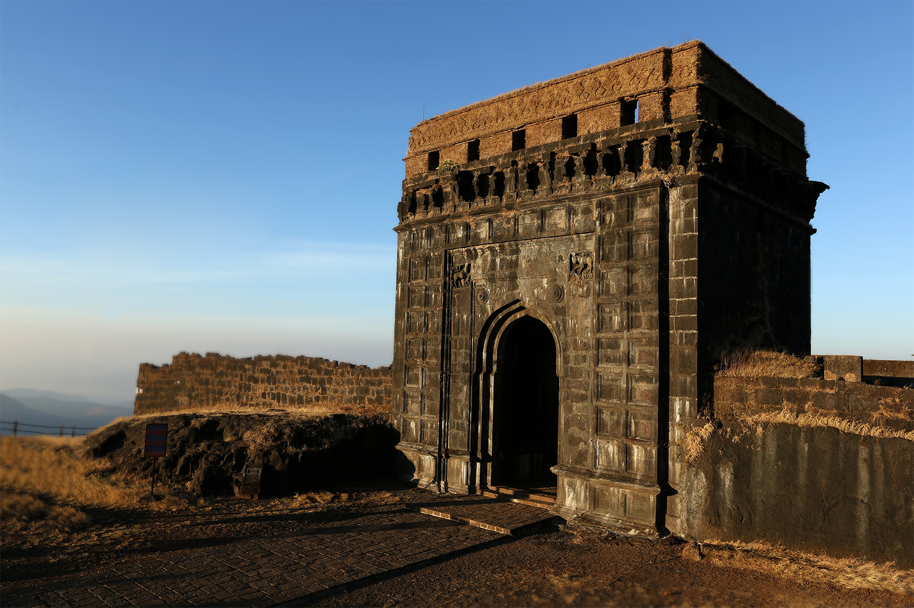

Raigad Fort is a historic fort located in the Sahyadri mountain range of Maharashtra, India. It was the capital of the Maratha Empire under Chhatrapati Shivaji Maharaj.
Originally known as Rairi Fort, it was captured and rebuilt by Shivaji Maharaj in 1656. He declared it his capital in 1674 and was crowned the King of the Marathas at this fort.
The fort features massive stone walls, the grand Maha Darwaja (main entrance), the Queen’s Quarters, and the famous Takmak Tok (punishment point) offering panoramic views.
Raigad Fort stands as a symbol of Maratha pride. It played a crucial role in Shivaji’s military strategy and governance.
Location: Raigad District, Maharashtra, India
Timings: 8:00 AM to 6:00 PM
Entry Fee: Free (Ropeway charges apply)
Best Time to Visit: October to March
The nearest railway station is Mangaon (40 km away). Raigad Fort can be reached by road and by a ropeway that takes visitors to the top.
According to legend, a brave woman named Hirkani climbed down the steep fort walls to return home to her baby at night, which led to the construction of the Hirkani Buruj.
For more details, visit these websites: